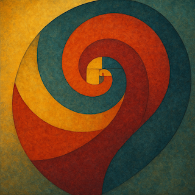

Archai
Aleksandar Gazibara

Mislim da su samo otišli...
TERENSKI IZVEŠTAJ #46/2049 — LOKALITET GF-94
RGF Geologija/Geofizika - atmosferska odstupanja Istraživač: dr S. Armenulić Datum: 23. septembar 2049.
Registrovana je anomalija.
Barometarske vrednosti povremeno osciluju.
Promene traju tačno 8 sekundi, sa amplitudom od 3.2 do 4.9 milibara.
Nema seizmičke aktivnosti. Nema pomeranja tla. Nema temperaturnih razlika. Nema vetra.
Ptice i dalje izbegavaju oblast. Nema insekata. Oprema je prethodno kalibrisana. Tri puta sam proverio. Očitavanja su stabilna.
S. Armenulić
"Šta se kog đavola ovde desilo?Tako velika promena pritiska u tako malom prostoru. Ništa ne razumem. Možda opet oprema ne radi dobro. Ne znam ni da li da šaljem ovaj izveštaj, pomisliće neko da sam sišao s uma."
Armenulić, čovek srednjih godina, bez porodice. Nauka mu je jedina stvarna obaveza i strast.
Već tri nedelje beleži značajne oscilacije. Isprva deluju kao da su nasumične, ali kasnije utvrđuje da se dešavaju na svakih 5 dana. Uvek unutar radijusa od tačno 13 metara. I uvek traju 8 sekundi.
“Ako su merenja tačna, ovo bi mogao da bude interesantan fenomen... možda za Nobela." Nasmeja se toj skoro nasumičnoj misli.
“A možda je konačno vreme da zamenimo opremu za nešto što je malo pouzdanije. Ok, nazad do fakulteta, pa zasluženi vikend.”
Na terenu
Ponovo na terenu, zaintrigiran, Armenulić posvećuje svu svoju pažnju zbivanjima u radijusu sa anomalijama, kako se ispostavilo prvom od nekoliko.Pod UV svetlom, primećuje da su fosilni tragovi organskog porekla pravilno isečeni i savršeno kružni. Staro drvo, životinjski zubi, mumificirana tkiva. Prečnik identičan.
“Ovo nisu oštećenja od sedimenta ni vode. Najviše liči na nekakvo uzorkovanje.” Nebo je bilo olovno, bez vetra. Odjednom, barometar je zazviždao. Kratak ton. Iritantan. Odstupanje.
Pogled na displej: +4.6 milibara. Za tri sekunde.
Magnetometar šiba krivu van skale.
Geofon pokazuje vibraciju, ali tlo se ne miče, nema zvuka. U istom trenutku osetio je blag, neprijatan pritisak u ušima, kao pri naglom poniranju pod vodu. Posle 8 sekundi — tišina. Kao da je neko isključio prekidač. Uši su mu još kratko bridele.
Stajao je iznad bele linije kredom obeleženog kruga, gledajući u mirnu travu. Prsti su mu se znojili u tankim rukavicama, puls mu je bio ubrzan i imao je iznenadni nalet panike. S teskobom u grudima, imao je osecćaj da ga nešto posmatra. “Šta se to dešava?”
TERENSKI IZVEŠTAJ #47/2049 — LOKALITET GF-94
RGF Geologija/Geofizika - atmosferska odstupanja Istraživač: dr S. Armenulić Datum: 14. oktobar 2049.
Nalazi:
* Mikroperforacije — geometrijski perfektne, 1,7–1,9 µm. Raster pravilnog rasporeda. * Izostanak DNK na perforiranim zonama; neperforirani uzorci — DNK očuvan. * Sintetička kontaminacija — neidentifikovane nanostrukture * Geo-strukturne anomalije — mikrokoncentrične frakture tipične za sondiranje bez fizičkog kontakta
„Sav DNK materijal uklonjen je s neverovatnom preciznošću. Prećutao sam da sam naišao i na ljudsku dlaku — to bi bilo previše. Možda moja. Ionako sumnjam da će ovaj izveštaj ikada ugledati svetlost dana. Previše je čudno.“
13m * 8
Prošlo je još 3 nedelje otkako je Armenulić prvi put registrovao anomalije.Odlučio je da i dalje ni sa kim ne deli ova saznanja. Izveštaje fakultetu je falsifikovao navodeći da je stanje redovno.
Intimno je osećao da je na tragu nečega što prevazilazi okvire njegovih istraživanja, ali i kapaciteta sredine da ovako nešto pojmi.
“Odstupanja zbog opreme... šanse za tako nešto su sada mizerne.”
Registrovao je osam krugova radijusa 13 metara u većem radijusu od ukupno 233 metra.
Mapa
Proširio je pretragu i pažljivo beležio koordinate svakog novog kruga. Kada ih je uneo u softver, ekran se ispunio tačkama koje, izdaleka, nisu izgledale nasumično.Kao da svaki sledeći krug izrasta iz prethodnog, po nekoj unutrašnjoj logici koja mu je izmicala.
Zumirao je i vraćao prikaz unazad, pokušavajući da pronađe pravilo. Nije to bio raspored koji pravi vetar, ni taloženje sedimenata, ni korenje biljaka.
Armenulić nije bio siguran šta ga više uznemirava: obrazac koji podseća na potpis ili to što je sve ovo bilo potpuno nemoguće.
Misli
Živimo ne mareći. Onda se, ponekad, dogodi nešto poput gravitacionog drhtaja koji može da registruje samo instrument vredan nekoliko milijardi.Ovo je možda krupnije nego što iko može da zamisli. Ne postoji teorijski okvir za ovo. Ne tvrdim ništa. Za sad samo beležim, a nisam siguran ni zašto, kad ga niko drugi neće čitati.
Deluje kao da je izvan domašaja našeg razumevanja.
Nekoliko meseci kasnije
Armenulić je i dalje provodio vreme na terenu očekujući novi razvoj, anomalije, podatke.Međutim, poslednja se desila sada već odavno. Sve prethodne desile su se u okviru jednog meseca, tačnije 34 dana. Šta god da je to bilo, više ga nema.
Ako bilo kome dam ove podatke… rizikujem da budem predmet podsmeha do kraja karijere. Renomirani naučnik izgubio razum… već mogu da zamislim.
Ali, znam da se ovde desilo nešto krupno.
Dođoh, videh… odoh?
← Nazad na početnu